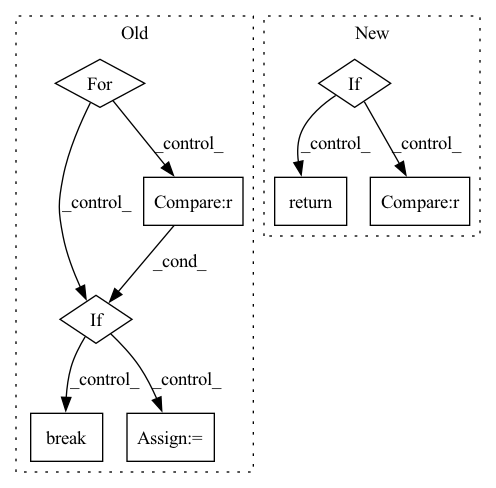

Pattern ID :30755
Before Change
def get_end_point_status(self, end_point_id):
end_point_activated = False
status_list = self.get_deployment_status_list(end_point_id)
for status_item in status_list:
device_id, status_payload = self.get_status_item_info(status_item)
if str(device_id) == FedMLModelCache.FEDML_ALL_DEVICE_ID_TAG :
end_point_activated = status_payload["end_point_status"]
break
return end_point_activated
def get_deployment_result_key(self, end_point_id):After Change
self.redis_connection.set(self.get_end_point_status_key(end_point_id), status)
def get_end_point_status(self, end_point_id):
if not self.redis_connection.exists(self.get_end_point_status_key(end_point_id)):
return False
status_int = self.redis_connection.get(self.get_end_point_status_key(end_point_id))
status = True if status_int == 1 else False
return status
def get_deployment_result_key(self, end_point_id):In pattern: SUPERPATTERN
Frequency: 3
Non-data size: 8
Instances Fragment ID: 90687142
Project Name: fedml-ai/fedml
Commit Name: d019aac1f3936222fdb9403c0bc7c2fdaec06b4f
Time: 2023-01-08
Author: alexliang.kh@gmail.com
File Name: python/fedml/cli/model_deployment/device_model_cache.py
M Class Name: FedMLModelCache
N Class Name: FedMLModelCache
M Method Name: get_end_point_status(2)
N Method Name: get_end_point_status(2)
M Parent Class: object
N Parent Class: object
M File Name: python/fedml/cli/model_deployment/device_model_cache.py
N File Name: python/fedml/cli/model_deployment/device_model_cache.py
M Start Line: 129
M End Line: 137
N Start Line: 127
N End Line: 131
Before Change
import datasets
has_annotations = False
for rec in self._records:
if rec.annotation is not None :
has_annotations = True
break
if not has_annotations:
return datasets.Dataset.from_dict({})
class_tags = ["O"]
class_tags.extend(
[
f"{pre}-{label}"After Change
if isinstance(framework, str):
framework = Framework(framework)
if framework is Framework.TRANSFORMERS:
return self._prepare_for_training_with_transformers()
// else: must be spacy for sure
if lang is None :
raise ValueError(
"Please provide a spacy language model to prepare the dataset for training with the spacy framework."
) Fragment ID: 90687140
Project Name: recognai/rubrix
Commit Name: 85878087144723695568ebde0d04e16fc9de3c1c
Time: 2022-08-22
Author: francisco@recogn.ai
File Name: src/rubrix/client/datasets.py
M Class Name: DatasetForTokenClassification
N Class Name: DatasetForTokenClassification
M Method Name: prepare_for_training(3)
N Method Name: prepare_for_training(1)
M Parent Class: DatasetBase
N Parent Class: DatasetBase
M File Name: src/rubrix/client/datasets.py
N File Name: src/rubrix/client/datasets.py
M Start Line: 766
M End Line: 842
N Start Line: 793
N End Line: 854
Before Change
def get_end_point_status(self, end_point_id):
end_point_activated = False
status_list = self.get_deployment_status_list(end_point_id)
for status_item in status_list:
device_id, status_payload = self.get_status_item_info(status_item)
if str(device_id) == FedMLModelCache.FEDML_ALL_DEVICE_ID_TAG :
end_point_activated = status_payload["end_point_status"]
break
return end_point_activated
def get_deployment_result_key(self, end_point_id):After Change
self.redis_connection.set(self.get_end_point_status_key(end_point_id), status)
def get_end_point_status(self, end_point_id):
if not self.redis_connection.exists(self.get_end_point_status_key(end_point_id)):
return False
status_int = self.redis_connection.get(self.get_end_point_status_key(end_point_id))
status = True if status_int == 1 else False
return status
def get_deployment_result_key(self, end_point_id): Fragment ID: 90687135
Project Name: fedml-ai/fedml
Commit Name: c76c11bc0c1e6492ef725d9dd8900a158fafe4a9
Time: 2023-01-08
Author: alex.gpt.llm@gmail.com
File Name: python/fedml/cli/model_deployment/device_model_cache.py
M Class Name: FedMLModelCache
N Class Name: FedMLModelCache
M Method Name: get_end_point_status(2)
N Method Name: get_end_point_status(2)
M Parent Class: object
N Parent Class: object
M File Name: python/fedml/cli/model_deployment/device_model_cache.py
N File Name: python/fedml/cli/model_deployment/device_model_cache.py
M Start Line: 129
M End Line: 137
N Start Line: 127
N End Line: 131